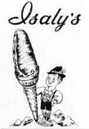

Ward-Thomas Museum


Isaly Stores in Niles
Ward — Thomas
Museum
Home of the Niles Historical Society
503 Brown Street Niles, Ohio 44446
Click here to become a Niles Historical Society Member or to renew your membership
Click on any photograph to view a larger image, click on image again to zoom into photograph.
|
Isaly store on Robbins Avenue. |
Isaly Stores in Niles, Ohio. There were two Isaly stores in Niles, Ohio. The downtown store was located on South Main Street where the Old Carmella’s Confectionery had been located. The second location was on Robbins Avenue where the car wash is today (2022). Each Isaly Store was individually owned and all had the same appearance: two swinging doors in the center, front glass windows to advertise special and display items that were for sale. Inside the store were a deli counter and an ice cream counter with seating at the counter and several small booths. The deli was famous for its chip-chopped bar-b-que ham that was thinly shaved while the ice cream counter featured many flavors that could be made ito a skyscraper cone. The downtown Isaly’s had a large glass jar filled with pickles. “The students from Niles High School on Church Street often stopped at Isaly’s and as a challenge would have a sky scraper cone and a pickle”, as told by Sarah Abernathy Tomerlin. |
|
| |
||
|
Typical Isaly’s interior view. |
The image above shows the scooper
used to make a skyscraper ice cream cone. 
Isaly logo. |
|
| |
||
|
Top of calendar illustrating milk products. |
The Isaly Story. The company was founded by William Isaly, grandson of Swiss immigrants who settled in Monroe County, Ohio, in the 19th century. By the early 1960s, the company boasted retail outlets that stretched from Pennsylvania to Iowa. Isaly’s early success was attributed to
its loose company structure, which allowed for easy expansion
without corporate overhead. William Isaly’s first dairy
was established in Mansfield, Ohio, where he acquired the Mansfield
Pure Milk Company. Isaly expanded the core business from processing
milk for sale to other grocers, to operating his own retail stores
with milk, ice cream, bread and lunch counter service. Isaly also
pioneered the idea of the modern convenience store by opening
at least one outlet that also sold gasoline to motorists |
|
| |
||
| In the 1930s, Isaly’s began a commercial building program that employed high style art deco / Art Moderne designed production facilities and retail outlets, most of which were designed by architect Vincent (Shooey) Schoeneman. The Youngstown dairy facility represented the apex of this project, with the streamlined building (with exterior by architect Charles F. Owsley) dominated by a five-story glass block tower.
|
In addition to the Klondike Bar, the dairies were also known for their unique Skyscraper Cones, created in Youngstown by plant supervisor Sam Jennings which eschewed round ice cream scoops, instead using a patented design that resulted in a long, inverse-cone-shaped dip. The company also had great success in selling chipped chopped ham, sliced (shaved) razor-thin for sandwiches. The sandwich was featured on the PBS special, “Sandwiches That You Will Like”. The company also marketed “immunized milk for infants, supplied by special isolated herds of cattle.” Shifting consumer demands, declining sales for home-delivered milk, as well as corporate consolidation led to the closing of Isaly facilities beginning in the 1960s. According to Brian Butko, author of Klondikes, Chipped Ham, & Skyscraper Cones: The Story of Isaly’s, it was the loose company structure – in an era of growing corporate homogeneity – that left Isaly’s unable to compete on the wholesale and retail levels, leading to the closure of its dairies beginning in the mid-1960s. Several members of the Isaly family attempted to continue to operate food-service operations. In Pittsburgh, Isaly outlets were converted to the “Sweet William” brand. In Ohio, restaurants operated under the “Isaly Shoppe” name until the mid-1990s when the final outlet closed in Marion, Ohio. Since 1984, the Isaly’s name has enjoyed a comeback of sorts, but one not overseen by members of the Isaly family. Delicatessen Distributing Incorporated of Evans City, Pennsylvania purchased the Isaly trademark name and markets the original quality luncheon meats, cheeses and sauces under the Isaly name in western Pennsylvania and eastern Ohio. The concern also distributes Isaly brand ice cream (except Klondikes) to stores in Western Pennsylvania. The Klondike Bar product line is now owned by Unilever. There are at least three Isaly’s still in operation in southwestern Pennsylvania in the areas of West View, Turtle Creek, and East Allegheny (city neighborhood of Pittsburgh), all retaining most of the classic interior. In June 2012, ownership of the West View Isaly's changed hands. The new owners have kept everything in the store intact but slightly changed the name to “I Shall Always Love You Sweetie”, reflecting on Isaly’s acronym. To punctuate this, periods have been added after each letter in the classic Isaly’s storefront. The Isaly’s motif. A former Isaly’s franchise in New Brighton, Pennsylvania, which operated under the name “Bricker's Restaurant” after its Isaly’s contract ended and continued to serve much of the Isaly’s menu, closed in 2012 but reopened in late 2016 under new ownership as a convenience store and cafe, Main Street Market. from Wickipedia. |
|
|
|
||
{kind=link}
{kind=link}
{kind=link}
{kind=link}
{kind=link}
{kind=link}